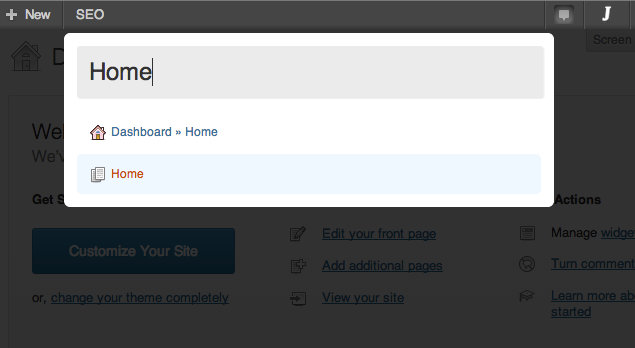
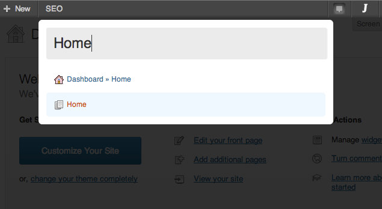

About
What is this thing, anyway?
Let’s say you’ve just logged in and you’re on the dashboard. You want to get to a child page of your about page called “mission”, but you can’t remember if it’s on page 2 or 5. With Jarvis it’s simple. Open Jarvis and start typing “mission” and your page will show up immediately.
Think of Jarvis as a content management launch bar. Once Jarvis is installed all you have to do to start using it is hit the quick key /, type in your search (eg, “settings”) and select the page you’re looking for. It’s the fastest way to get from the dashboard to editing your anything on the admin side.
- Access the settings for permalinks:
/+Permalinks+ enter and you’re there. - Edit your contact page:
/+Contact+ enter and you’re there. - Access your post about caving in Nigeria from last year:
/+Nigeria Caving+ enter and you’re there.
The idea is to make it easier for anyone using the admin side of WordPress to get to the pages they’re looking for.
 

FAQ
Answer my question!
How do I access Jarvis
Hit the / key in the admin section or click the Jarvis button in the admin toolbar.
It’s still not working…
You may be on a page that’s focusing on a text area or input box. If this is the case just click somewhere on the page outside of these boxes and the hit /.
Changelog
What's the latest?
v0.3 latest
- Compatibility with WordPress 3.8+.
- IE8 fix.
- Minification.
- Compatibility with dashicons.
v0.2
- Official initial release.
v0.1
- Internal release for testing.
About WDG
Who are these crazy guys?
Web Development Group is an agency in Alexandria, VA that specializes in User Experience, Web Design and Web Development. Since we typically use WordPress and Drupal for our projects, we decided we need to start giving back to those communities in bigger ways. Enter Jarvis! The first of many helpful tools and plugins designed to fill a need we see in the WordPress administration section.
If you like what you see get in touch!